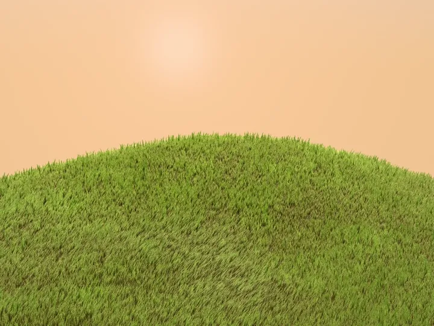

Side project 01
Windcrest
- A hill where every blade of grass is real geometry: 380,000 of them in one draw call (instancing).
- Wind comes in gusts, grass grows in tufts, and the cursor leaves a trail like a hand on a carpet.
- A blade is never thinner than a pixel, so far grass does not shimmer.